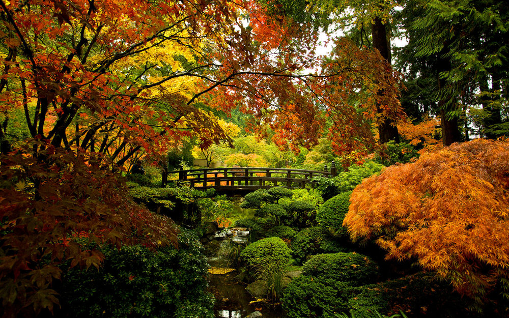
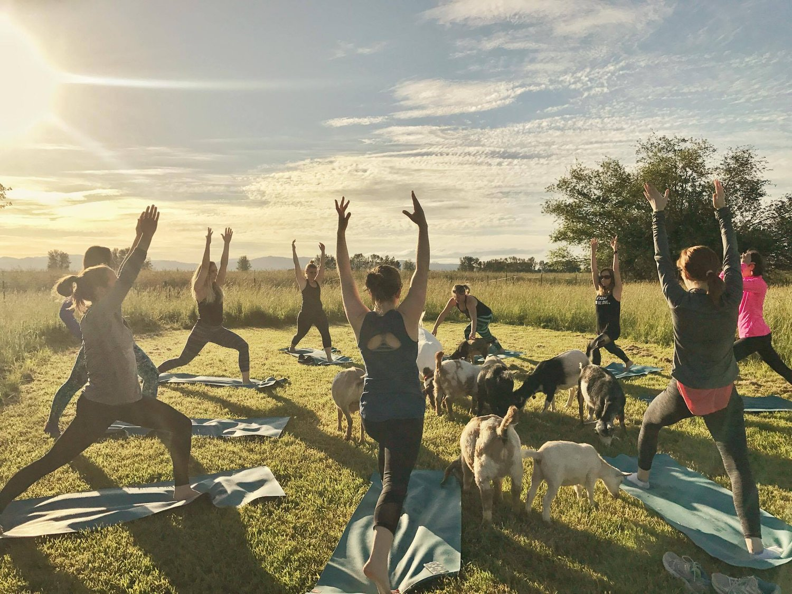
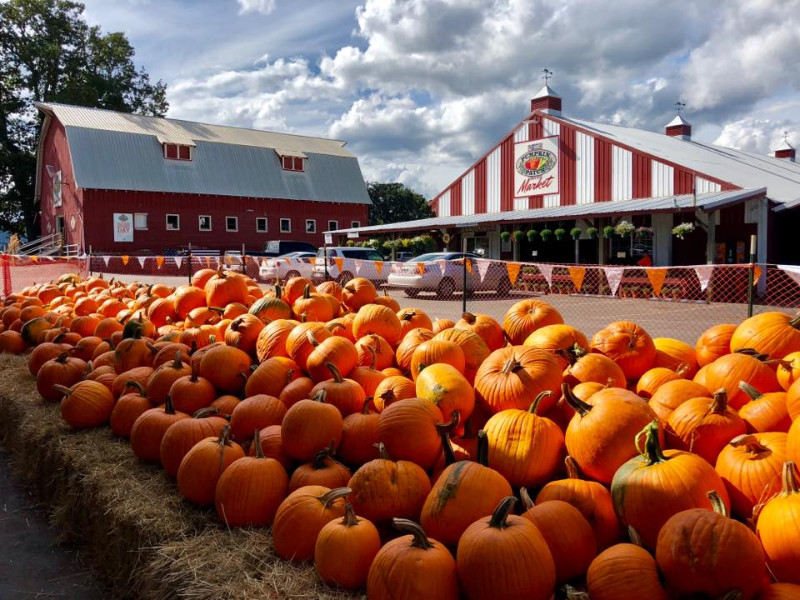
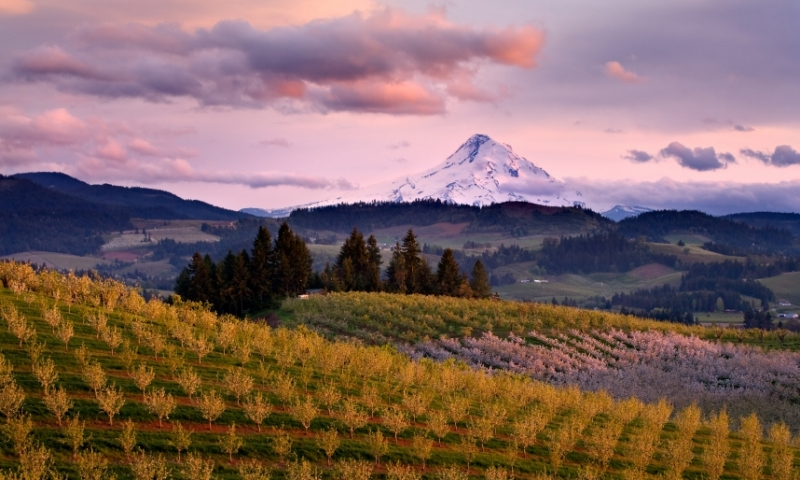

In The City
Portland Japanese Garden

-
Walk around the garden, enjoy tea at the Umami Café, and visit the gift shop for some goods!
-
Best time to go: Year-round, but fall is particularly nice.
-
Tip: Book in advance to secure your spot and skip the line.
Further Out
Oregon City Goat Yoga

-
The Original Goat Yoga Mission is to farm happiness by providing; 1. A joyful experience that improves mental
and physical health through the healing powers of nature and animals. 2. The economic development of rural
households and family farms throughout the world through agritourism.
-
Drive time from Portland: 25 minutes
-
Best time to go: A clear, warm day is best to experience sunshine and goats at the same time!
-
Tip: Book in advance for a date that works for you!
Day trip to Sauvie Island

-
Walk thorugh a corn maze or select a pumpkin at the pumpkin patch and enjoy farm-to-plate food at Topaz Farms!
-
Drive time from Portland: 45 minutes
-
Best time to go: Fall, but year-round!
-
Get your nature fix in by doing a nearby hike like Warrior House Lighthouse, Wapato State Greenway, or Oak Island Nature Trail.
Go apple picking in Hood River

-
Make a full day or weekend trip to this Fall paradise, drive the Hood River County Fruit Loop, and
stop at orchards, farms, cideries, wineries, farm stands, and restaurants along the way.
-
Drive time from Portland: 1 hour
-
Best time to go: Fall for apple and pear season.
-
Tip: Draper Girls Country Farm has goats and amazing views of Mount Hood!